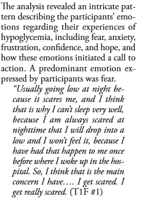
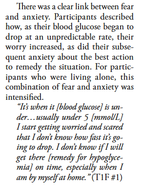
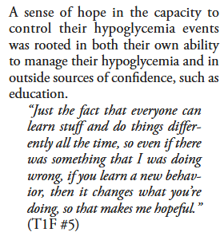

library(ellmer)
library(tidyverse)
# Note.
## initialize connection after adding api key to .Renvironment file
## usethis::edit_r_environ() opens fileEmotional Responses
Living With Hypoglycemia
This example is extended from Living With Hypoglycemia: An Exploration of Patients’ Emotions: Qualitative Findings From the InHypo-DM Study, Canada2019 publication.
The purpose of this code is to examine how well LLMs can recover emotional states that were human coded in the publication without information about themes or context other than a user prompt. We use Claude Sonnet 3.7, an LLM optimized for computational efficiency and reliability in research applications, offering robust performance for systematic analysis, data processing, and academic workflows through multiple access including the use of an API.1 Anthropic, creator of Claude, takes user security and privacy seriously and conversations are not used for model training such as in other LLM platforms.
Setting up Claude Sonnet 3.7 is simple via rstudio using the elmer package but requires an API key and a credit card on file.
In using LLMs it is important to provide it with a robust prompt that contains a single task and set of rules. Below we generate a simple prompt with basic rules. It is possible to provide the LLM a pdf document with a systematic coding schema.
# test 2 with data
system_prompt <- paste(
# task
"You are a graduate researcher that will identify and categorize emotional states expressed by participants during interviews about their adversities living with type 1 and type 2 diabetes to better understand hypoglycemia.",
# rules
"#keep the response brief",
"* Use examples when helpful.",
# format
collapse = "\n"
)We are also interested in how a local (e.g., smaller and less robust model) LLM such as llama 3.2 which is installed locally via ollama, performs on this task. The advantage of using llama is that it is installed locally which translates as a secured way of processing data and it is free as it uses local computing resources. The disadvantage is that these models tend to be much smaller compared to Claude, ChatGPT, and Gemini.
We compare both models using the same user prompt. First we print the text from the paper, followed by the Claude, and llama assessments before moving on to the next text example.
client_claude <- chat_anthropic(system_prompt, model = "claude-3-7-sonnet-latest")
client_llama <- chat_ollama(system_prompt, model = "llama3.2:3b")Finally, we pass it examples from interviews found in the public on page 272, results section.

string_ex <- "Usually going low at night because it scares me, and I think that is why I can’t sleep very well, because I am always scared at nighttime that I will drop into a low and I won’t feel it, because I have had that happen to me once before where I woke up in the hospital. So, I think that is the main concern I have…. I get scared. I get really scared."
client_claude$chat(string_ex)This participant is expressing fear as the primary emotional state. They
specifically mention being "scared" multiple times regarding nighttime
hypoglycemia. The fear stems from a traumatic past experience (waking up in
hospital) and centers on the concern of experiencing a severe low blood sugar
episode while asleep and being unable to detect it. This fear appears to be
persistent and impacts their sleep quality, suggesting it's a significant
ongoing emotional burden.client_llama$chat(string_ex)Category: Anxiety/Certainty about Hypoglycemia at Night.
Notable Emotional States:
* Fear (e.g., "I'm always scared...")
This participant's fear of experiencing nighttime hypoglycemia is a significant
concern, likely contributing to their poor sleep quality. This anxiety is
rooted in past experiences and the perceived unpredictability of low blood
sugar events, particularly in nighttime settings where they feel potentially
unaware of their condition (e.g., waking up in the hospital after a past
episode).
string_ex <- "It’s when it [blood glucose] is under…usually under 5 [mmol/L]
I start getting worried and scared that I don’t know how fast it’s going to drop. I don’t know if I will get there [remedy for hypoglycemia] on time, especially when I
am by myself at home."
client_claude$chat(string_ex)The primary emotional state expressed here is anxiety/fear. The participant
articulates:
1. Worry and fear ("getting worried and scared") triggered when their blood
glucose drops below a specific threshold (5 mmol/L)
2. Uncertainty-based anxiety about the unpredictable nature of hypoglycemia
("don't know how fast it's going to drop")
3. Concern about self-efficacy in managing the situation ("don't know if I will
get there on time")
4. Specific fear of being alone during a hypoglycemic episode ("especially when
I am by myself at home")
This represents fear tied to uncertainty, helplessness, and vulnerability when
experiencing hypoglycemia while alone.client_llama$chat(string_ex)Category: Anxiety/ Fear of Uncertainty due to Rapid Hypoglycemia Episodes while
Alone.
Notable Emotional States:
* Worried (e.g., "I start getting worried...")
* Scared (e.g., "...and scared that I don't know how fast it's going to drop")
* Anxious about reaction time and access to remedy
+ Emphasis on being alone at home increases perceived risk
This participant's anxiety is driven by the fear of not reacting quickly enough
to a potentially rapid hypoglycemic descent, particularly when they are without
immediate support (e.g., family members or caregivers) at night.
string_ex <- "Just the fact that everyone can learn stuff and do things differently all the time, so even if there was something that I was doing wrong, if you learn a new behavior, then it changes what you’re doing, so that makes me hopeful."
client_claude$chat(string_ex)The primary emotional state expressed here is hope. The participant
demonstrates:
1. Optimism based on the belief in learning and adaptation ("everyone can learn
stuff and do things differently")
2. Acknowledgment of potential for improvement ("even if there was something I
was doing wrong")
3. Faith in behavioral change leading to different outcomes ("if you learn a
new behavior, then it changes what you're doing")
4. Explicit expression of hopefulness ("that makes me hopeful")
This represents a positive emotional outlook centered on possibility for
growth, change, and improvement in their diabetes management.client_llama$chat(string_ex)Category: Hope/Certainty about Personalized Management of Diabetes.
Notable Emotional State:
* Hopeful (e.g., "...it makes me hopeful")
Despite concerns and fears, this participant expresses hope for adapting to
changes in their conditions or treatment plans. They acknowledge the
possibility of trying new approaches and adjusting their behavior to mitigate
potential hypoglycemic episodes, suggesting a willingness to pivot and improve
their management.
These examples clearly show the advantage of using LLMs for this research as they come very close to human coding with minimal instructions. We do not recommend a full replacement of human coders but rather to integrate LLMs into a coding schema workflow in order to compliment data analysis. Claude tended to perform slightly better than llama using these examples. However, these examples from the paper were probably chosen for their clear indications of the emotional states of interest to the researchers. We are uncertain how these LLMs would perform with ambiguous examples of emotional states at this point.
Footnotes
Submitting an API request costs $.05 and can use up to 1 million tokens. A token is a basic unit of text that AI language models process, typically representing words, parts of words, or punctuation marks.↩︎